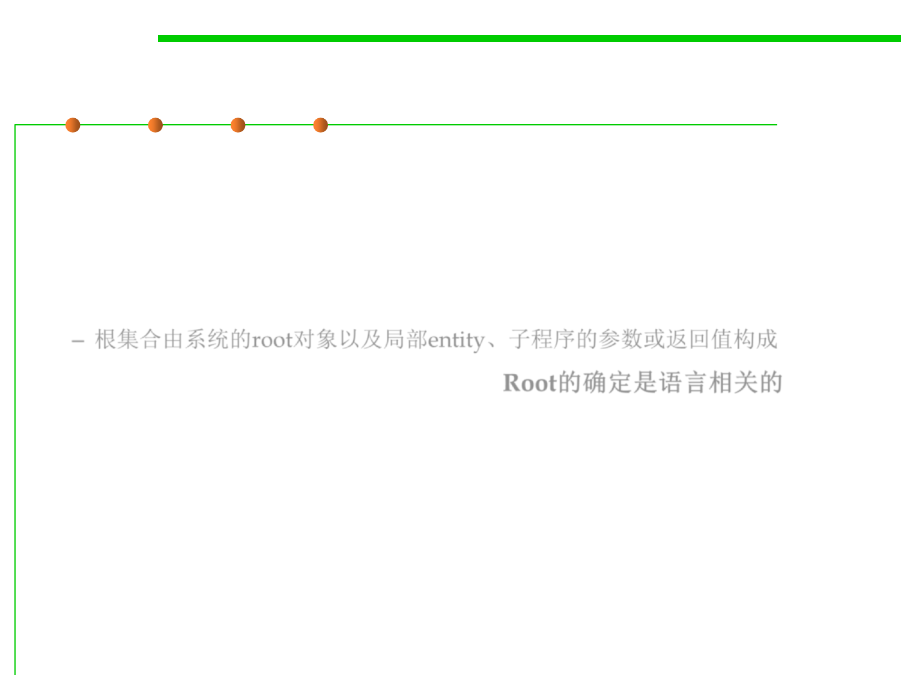

8.1 Metrics, Principles, and Methods of Construction for Performance
Reachable Objects vs. Unreachable Objects
▪ At any point during the execution of a system, the set of origins /
roots is made of the following objects:
– The system’s root object.
– Any object attached to a local entity or formal argument of a routine
currently being executed (including the local entity result for a function).
– 根集合由系统的root对象以及局部entity、子程序的参数或返回值构成
▪ What are the roots of a computation? Root的确定是语言相关的
– Determining roots is, in general, language-dependent
– Depends on the run-time structure defined by the underlying language.
▪ In common language implementations roots include
– Words in the static area
– Registers
– Words on the execution stack that point into the heap.